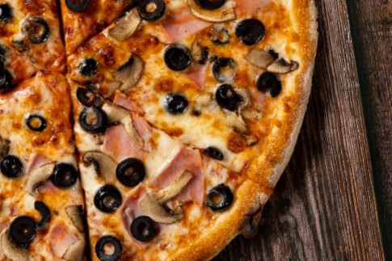
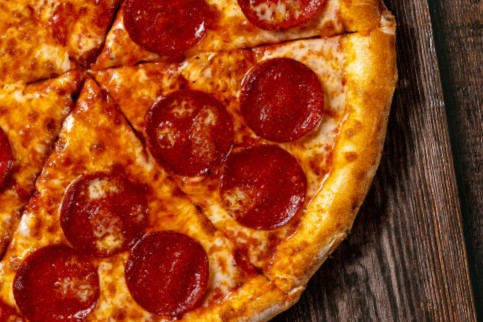
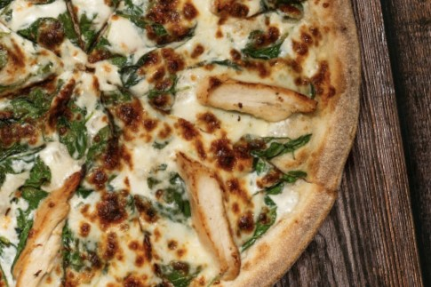
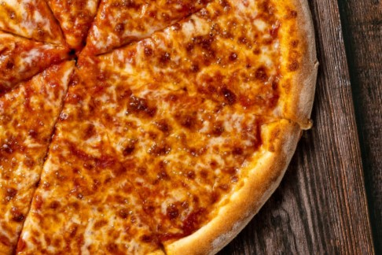
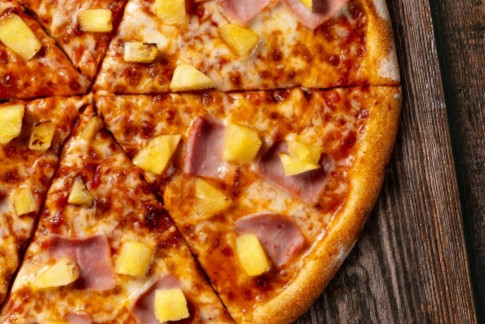
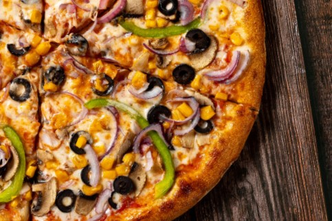

<section class="our-menu">
  <div class="container">
    <h2 class="title-menu">Our menu</h2>

    <ul class="menu-list">
      <li class="menu-item">
        <h3 class="pizza-title">Capricciosa</h3>
        

        <p class="pizza-description">
          Pizza Capricciosa is a traditional Italian pizza topped with a mix of
          artichokes, mushrooms, ham, and black olives, often complemented by
          mozzarella and tomato sauce. Its flavors offer a balance of earthy,
          salty, and savory notes, with variations that may include egg or
          anchovies depending on the region.
        </p>
        <button class="menu-button" type="submit">14$</button>
      </li>
      <li class="menu-item">
        <h3 class="pizza-title">Pepperoni</h3>
        
        <p class="pizza-description">
          Pizza Pepperoni is a classic American-style pizza topped with slices
          of spicy pepperoni, melted mozzarella, and a rich tomato sauce base.
          Its bold, smoky flavor and crispy edges make it a popular choice for
          those who enjoy a bit of heat and savory goodness.
        </p>
        <button class="menu-button" type="submit">14$</button>
      </li>
      <li class="menu-item">
        <h3 class="pizza-title">Quattro formaggi</h3>
        
        <p class="pizza-description">
          Quattro Formaggi pizza is a rich and indulgent Italian pizza topped
          with a blend of four cheeses, typically mozzarella, gorgonzola,
          parmesan, and fontina. The combination creates a creamy, flavorful
          experience with a mix of mild, sharp, and tangy notes.
        </p>
        <button class="menu-button" type="submit">14$</button>
      </li>
      <li class="menu-item">
        <h3 class="pizza-title">Spinach & Chicken</h3>
        
        <p class="pizza-description">
          Quattro Formaggi pizza is a rich and indulgent Italian pizza topped
          with a blend of four cheeses, typically mozzarella, gorgonzola,
          parmesan, and fontina. The combination creates a creamy, flavorful
          experience with a mix of mild, sharp, and tangy notes.
        </p>
        <button class="menu-button" type="submit">14$</button>
      </li>
      <li class="menu-item">
        <h3 class="pizza-title">Margherita</h3>
        
        <p class="pizza-description">
          Pizza Margherita is a simple yet iconic Italian pizza featuring fresh
          mozzarella, ripe tomatoes, and fragrant basil, all drizzled with olive
          oil. Its clean, classic flavors highlight the freshness of the
          ingredients, making it a timeless favorite.
        </p>
        <button class="menu-button" type="submit">14$</button>
      </li>
      <li class="menu-item">
        <h3 class="pizza-title">Hawaii</h3>
        
        <p class="pizza-description">
          Hawaiian pizza pairs sweet pineapple chunks with savory ham, layered
          over a base of mozzarella and tomato sauce. The contrast between the
          juicy fruit and salty ham creates a unique blend of sweet and savory
          flavors.
        </p>
        <button class="menu-button" type="submit">14$</button>
      </li>
      <li class="menu-item">
        <h3 class="pizza-title">Vegetable</h3>
        
        <p class="pizza-description">
          Vegetable pizza is a colorful and fresh option topped with an
          assortment of veggies like bell peppers, onions, mushrooms, and
          tomatoes, often paired with mozzarella and tomato sauce. Its
          combination of crisp, roasted vegetables offers a light yet flavorful
          bite.
        </p>
        <button class="menu-button" type="submit">14$</button>
      </li>
      <li class="menu-item">
        <h3 class="pizza-title">Hot & Spicy</h3>
        
        <p class="pizza-description">
          Hot & Spicy pizza packs a fiery punch with toppings like spicy
          sausage, jalapeños, pepperoni, and chili flakes, all layered over a
          mozzarella and tomato sauce base. Its bold, zesty flavors make it a
          favorite for those who enjoy heat and intense, savory tastes.
        </p>
        <button class="menu-button" type="submit">14$</button>
      </li>
    </ul>
  </div>
</section>
